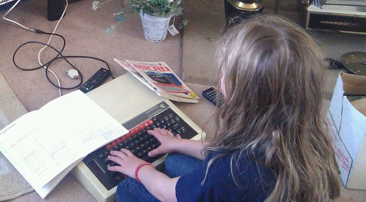

Teach our kids to code (or not)?
Three things have prompted me to write my first blog post in over almost year:
- This petition encouraging the government to mandate the teaching of software development to ten year old kids in the UK.
- The RaspberryPi project who are creating a cheap (£20) computer to encourage kids to tinker.
- Digging out my old BBC Micro for my kids on a recent trip to my parent's house (see the picture below).

All three points are related to the question: how do we encourage children to engage in programming? Before continuing I want to make it unambiguously clear that I believe children should be encouraged to program.
When I first saw the petition on Twitter my first reaction was, "yeah, right on! I'll sign up" and duly signed.
However, my experience as both a professional computer programmer and former senior teacher in the UK's state sector leads me to believe I've made a mistake when signing the petition.
It states,
"Start teaching coding as a part of the curriculum in Yr 5. If it can be introduced as a part of the central curriculum in Year 5, then by the time those kids are drawn up through the education system, there would be far less of a disparity between the sexes - and maybe even an increased number of young people with an ability to manipulate open data, relate to code and challenge each other to design and build the digital products that we have not even begun to imagine. Year 8 is too late, we are losing the female coders and we need this generation to help us code a better country."
All laudable aims.
However, if the UK's Department of Education becomes involved and tells teachers to "start teaching coding as part of the curriculum in Yr 5" then we're doomed. Here's why…
First of all, where do you put such lessons in an already crowded curriculum? Secondly, who should teach "coding"? Thirdly (and most importantly), who decides what to teach?
The first problem is a question of priority. It has been my experience that in the UK priorities are directly linked to school results. For primary schools (who teach Yr 5) it means the SAT results for English, Maths and Science for the year 6 cohort leaving to embark on their secondary education. All through years 3, 4, 5 and 6 the priority seems to be focussed on getting the kids prepared for these tests (in years 1 and 2 the priority is for the SAT tests taken at the end of year 2). I suspect that if "coding" became part of the year 6 school results then schools would pay attention. Otherwise it'd be something the kids did on a Friday afternoon between P.E. and Music after a morning full of English, Numeracy (not Maths) and Science.
The second problem concerns skills and resources. Teaching is the hardest job I've ever had (I was a secondary head of music). Teaching in key stages 1 and 2 (Primary) strikes me as being even harder than teaching in key stages 3 and 4 (Secondary). You have to know how to do so much (which is why good teachers are so rare). Add all the bureaucracy, fads and government directives then you get a well-meaning unholy mess that works sometimes but more often than not fails spectacularly. Can you imagine the reaction from teachers when "coding" is introduced into this pot of educational stew? If you think teachers have lots of holidays in which they could learn how to program then think again: when do you think they do their planning, re-organisation of classrooms and marking of course-work? The only reasonable solution I can see would be for a specialist teacher of programming to take a lesson each week. But then the school would have to pay for them and it becomes a question of what each individual school sees as being a priority (see point one).
The third problem is the most interesting: Who decides what to teach? In the UK we have a national curriculum that tells teachers what they should teach so it's the government who decides. This has the advantage of ensuring all schools teach a worked out basic curriculum. It also has the disadvantage that all schools teach a worked out basic curriculum. Given the rapid change in the technology world and the slow rate of change in the educational world, is it possible that a worked out national curriculum would be any good? I have my doubts. I also worry that making kids have programming lessons is a great way to dissuade the next generation. Perhaps it should be like learning a musical instrument, everyone should have the opportunity to learn but only if they want to. Programming is not everyone's cup of tea.
This leads me to RaspberryPi – a cheap computer for kids to tinker with. I personally think this is a far superior way to engage kids in programming. To my (musician's) eyes the RaspberryPi device is like giving kids musical instruments. They're fun, kids can play with them and make them their own with nothing more than a chance to experiment without adult intervention. This builds upon what kids do naturally and is exactly what happened when I found my old BBC at the weekend: my kids had a go themselves and were, within minutes, playing around and having fun programming.
Does this require a change in the national curriculum? Of course not.
Finally there is the essential consideration of kids who don't have access to introductory books on programming, a computer or supportive parents.
Perhaps a better petition would call for a RaspberryPi to be given to every child in year 5 along with pre-installed self-paced software that teaches programming.